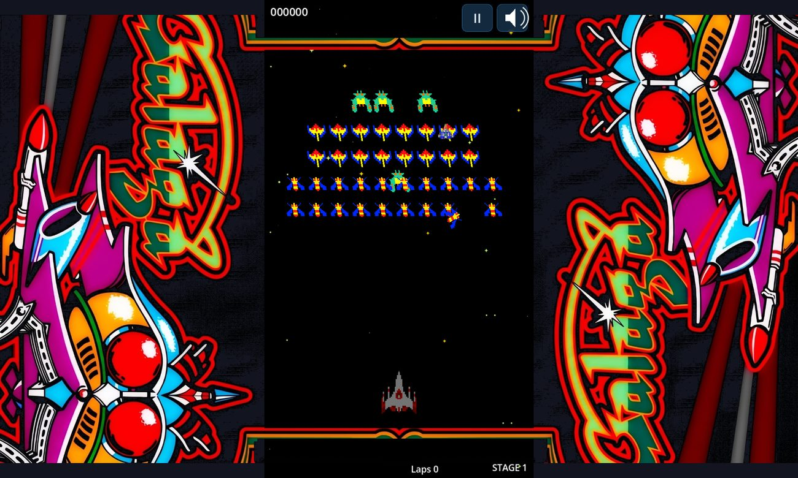
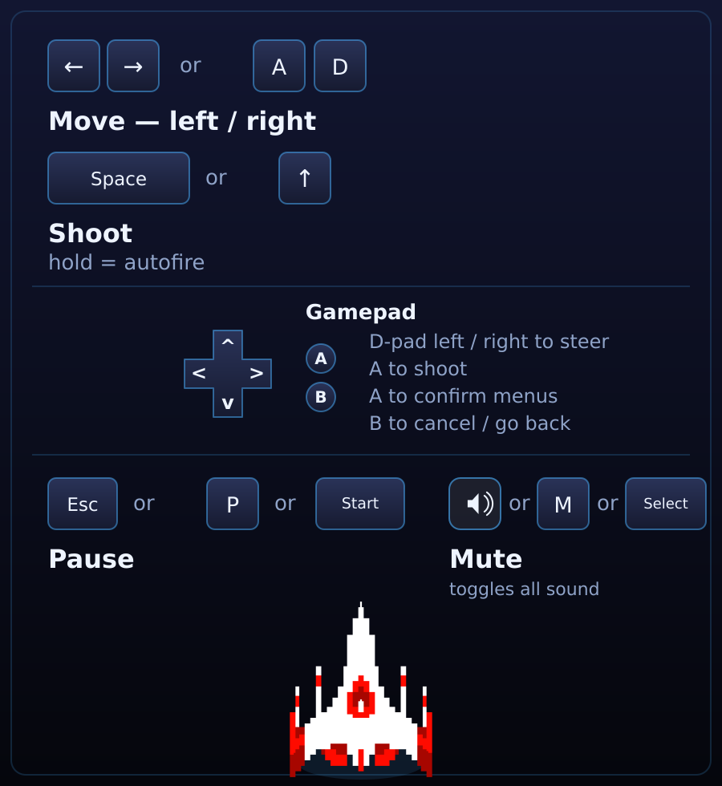
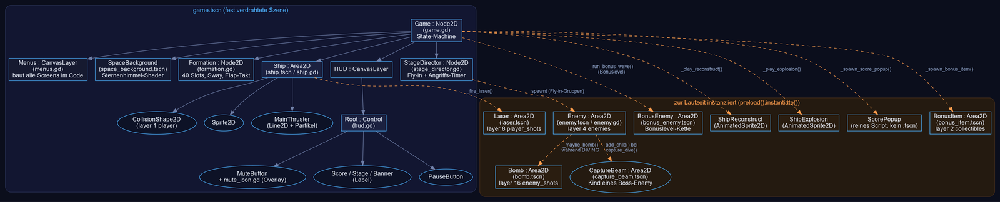
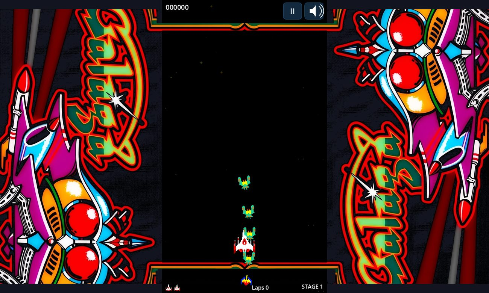
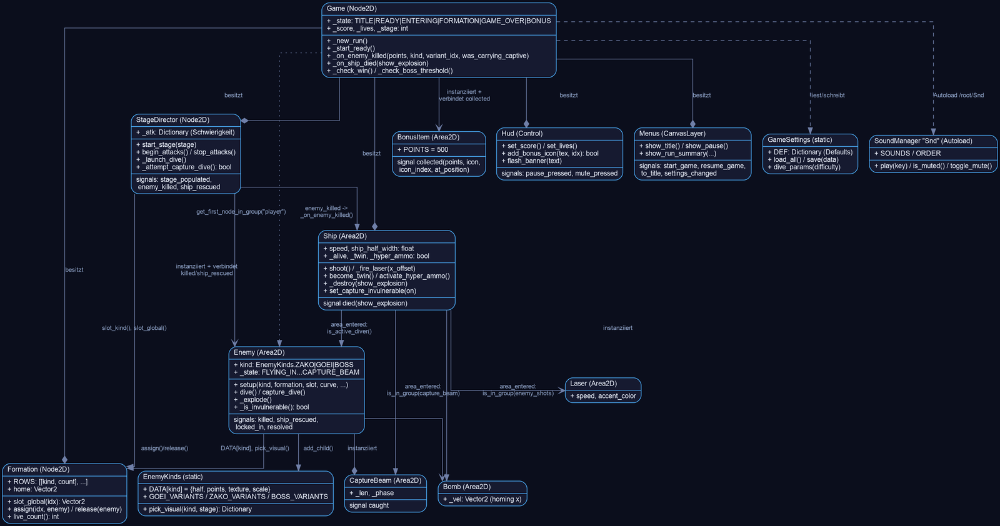

GDScript-Dateien — Bedeutung & Modularisierung
jede Datei kennt nur, was sie selbst betrifft
Die Codebasis ist klar nach Verantwortlichkeit geschnitten — keine Datei
übernimmt eine fremde Rolle. enemy.gd weiß nichts von Punkten
oder der HUD, es meldet nur per Signal; ship.gd weiß
nichts von Formationen, nur davon, dass „irgendetwas in Gruppe X" es
berührt hat.
| Bereich | Dateien | Zweck |
|---|---|---|
| Einstieg / State-Machine |
game.gd | Einziger Ort, der den Spielzustand kennt (TITLE→READY→ENTERING→FORMATION→GAME_OVER/BONUS). Verbindet alle Signale, verwaltet Punkte/Leben/Stage, startet Runden. |
| Formation & Choreografie |
formation.gd stage_director.gd entry_paths.gd attack_paths.gd enemy.gd enemy_kinds.gd |
Slot-Gitter, Fly-in-/Angriffs-Timing, Kurvengeometrie, Einzel-Gegner-Zustandsautomat, statische Gegner-Daten. |
| Spieler | ship.gd | Bewegung (Tastatur/Maus/Touch), Schießen, Twin-/Hyper-Ammo-Boni, Zerstörung. |
| Projektile / Gefahren |
laser.gd bomb.gd capture_beam.gd |
Reine Area2D-„Geschosse", jede mit sehr kleiner, eigener Zuständigkeit. |
| Bonusinhalte | bonus_item.gd bonus_enemy.gd score_popup.gd |
Sammelobjekte, Bonuslevel-Ketten, das kurze „+Punkte"-Textpopup. |
| Übergangs- Animationen |
ship_reconstruct.gd ship_explosion.gd |
Reine AnimatedSprite2D-Wrapper mit await …signal-Schnittstelle, sonst zustandslos. |
| UI | hud.gd menus.gd ui_style.gd mute_icon.gd |
HUD zeigt nur während einer Runde etwas; alle Screens (Titel/Pause/Settings/Game Over) baut menus.gd komplett im Code. |
| Daten / Persistenz |
game_settings.gd hall_of_fame.gd sound_manager.gd |
Alles static/Autoload — kein Node im Baum außer Snd. |
| Diagnose | _selftest.gd | Headless-Parse-Check + ein paar Logik-Assertions (siehe Grenzen davon in Modul 03). |


Szenenaufbau & Abhängigkeiten
eine feste Szene, alles Übrige zur Laufzeit instanziiert
Es gibt nur eine fest in der Godot-Szenenansicht
verdrahtete Szene, game.tscn (run/main_scene).
Alles, was während des Spiels an Gegnern/Schüssen/Effekten auftaucht, wird
zur Laufzeit aus separaten .tscn-Dateien
instanziiert (preload(...).instantiate()) — bewusst so,
damit z. B. enemy.gd unabhängig von der Formation
getestet werden kann. Boss-Capture etwa spawnt capture_beam.tscn
als Kind eines Enemy-Node, nicht als Geschwister.

Kollisionsschichten
Jede Gefahr/jedes Ziel ist selbst ein Area2D mit eigenem
collision_layer/collision_mask — es gibt keinen
zentralen Kollisions-Manager.
| Node | Layer | Maske (reagiert auf) |
|---|---|---|
player (Ship) | 1 | 4 + 16 (enemies + enemy_shots) |
collectibles (BonusItem) | 2 | 1 + 8 (player + player_shots) |
enemies (Enemy) | 4 | 8 (player_shots) |
player_shots (Laser) | 8 | — |
enemy_shots (Bomb, CaptureBeam) | 16 | 1 + 8 (player + player_shots — auch Bomben lassen sich abschießen) |
Wesentliche Code-Ausschnitte
Steuerung → Spawning → Animation → Kollision → Punkte
ASteuerung — drei Eingabewege, ein gemeinsamer Feuer-Mechanismus
ship.gd fragt Tastatur/Gamepad-Achse, Maus-Tracking und
Touch-Drag ab, aber alle drei münden in dieselbe
shoot()-Bedingung — kein Eingabeweg hat eigene Feuerlogik.
func _process(delta: float) -> void:
...
var dir := Input.get_axis("move_left", "move_right")
if dir != 0.0:
_mouse_aim = false
position.x += dir * speed * delta
elif _mouse_aim:
position.x = get_global_mouse_position().x # 1:1, kein "Nachziehen"
position.x = clampf(position.x, ship_half_width, viewport_width - ship_half_width)
if _touch_down or _mouse_down or Input.is_action_pressed("shoot"):
shoot()shoot() selbst begrenzt über Salven, nicht
über einzelne Strahlen — wichtig, weil Hyper-Ammo zwei Strahlen pro Schuss abfeuert:
func shoot() -> void:
if _fire_cooldown_t > 0.0:
return
var cap := _max_lasers * (2 if _hyper_ammo else 1)
if get_tree().get_nodes_in_group("player_lasers").size() >= cap:
return
_fire_cooldown_t = FIRE_COOLDOWN
for gun_x in ([-TWIN_OFFSET, TWIN_OFFSET] if _twin else [0.0]):
...BGegner-Spawning & Formationsflug
stage_director.gd teilt die 40 Formationsplätze in
5er-Gruppen und lässt jede Gruppe eine gemeinsame Kurve aus
entry_paths.gd abfliegen:
func _run_stage(stage: int, run_id: int) -> void:
var patterns := [EntryPaths.BOTTOM_UP, EntryPaths.TOP_LEFT, EntryPaths.TOP_RIGHT]
for g in group_count:
var pattern: int = patterns[(g + stage - 1) % patterns.size()]
var curve := EntryPaths.make(pattern, vp)
for k in GROUP_SIZE:
_spawn(idx, curve, k * LAUNCH_GAP, stage) # k*LAUNCH_GAP staffelt die Gruppe
await get_tree().create_timer(GROUP_GAP, false).timeoutJeder Enemy folgt der Kurve selbst per generischem
Path-Follower und tweent erst am Ende in seinen Formations-Slot ein:
func _follow_path(delta: float) -> void:
_path_dist += _path_speed * delta
var pos := _path.sample_baked(min(_path_dist, _path.get_baked_length()))
global_position = pos
...
if _path_dist >= length:
_after_path.call() # z.B. _begin_lock() -> Tween in den SlotDie Kurven selbst sind handgebaute Catmull-Rom-artige Splines — derselbe
kleine Helfer taucht identisch in entry_paths.gd und
attack_paths.gd auf:
static func _smooth(pts: PackedVector2Array, tension := 0.35) -> Curve2D:
var c := Curve2D.new()
for i in pts.size():
var tan := (pts[mini(i+1, n-1)] - pts[maxi(i-1, 0)]) * tension
c.add_point(pts[i], -tan, tan) # symmetrische Tangenten -> weiche Kurve ohne Handarbeit
return cDie „lebendige" Formation selbst (Sway + Flügelschlag-Takt) sitzt
komplett in formation.gd:
func _process(delta: float) -> void:
_time += delta
position.x = home.x + sin(_time * SWAY_SPEED) * SWAY_AMP # ganzer Block schwingt
_flap_t += delta
if _flap_t >= FLAP_INTERVAL:
flap = not flap
flap_toggled.emit(flap) # jeder Enemy hört mit und flappt synchronCKollisionserkennung → Zerstörung → Punkte
Das ist der Kern der Anfrage — jede Area2D meldet Kontakt
über Godots eigenes area_entered-Signal, geprüft wird nur per
Gruppenzugehörigkeit.
Gegner von Laser getroffen:
func _on_area_entered(area: Area2D) -> void:
if area.is_in_group("player_lasers"):
area.queue_free()
if _is_invulnerable(): # z.B. Boss mitten im Capture, oder noch unter der Mündung
return
_explode()
func _explode() -> void:
if _state == LOCKING: return # Doppel-Treffer-Sperre
var was_diving := _state == DIVING or _state == RETURNING
_state = LOCKING
killed.emit(int(EnemyKinds.DATA[kind]["points"]), kind, _variant_idx, _carrying_captive)
if _carrying_captive:
ship_rescued.emit(global_position) # Boss trug ein gefangenes Schiff -> Zwillingsjäger
...Schiff von Gegner/Bombe getroffen:
func _on_area_entered(area: Area2D) -> void:
if not _alive or _invuln > 0.0: return
if _capture_invuln and not area.is_in_group("capture_beam"): return
if area.is_in_group("enemy_shots"):
area.queue_free(); _destroy(not area.is_in_group("capture_beam"))
elif area.is_in_group("enemy") and area.is_active_diver():
_destroy(true)
elif area.is_in_group("bonus_wave_active"):
_destroy(true) # Rammen im Bonuslevel kostet auch ein LebenDie Punktevergabe selbst passiert nicht in
enemy.gd, sondern erst zwei Ebenen weiter oben in
game.gd — enemy.gd kennt weder Score noch HUD:
func _on_enemy_killed(points: int, kind: int, variant_idx: int, was_carrying_captive: bool) -> void:
if _ship._hyper_ammo: points *= 2
_score += points
_hud.set_score(_score)
while _extra_step > 0 and _score >= _next_extra and _lives < MAX_LIVES_RUNTIME:
_next_extra += _extra_step
_lives = mini(_lives + 1, MAX_LIVES_RUNTIME) # Extra-Leben-Schwelle
_check_boss_threshold()
_check_win()
enemy.gd::_is_invulnerable() gegen die Kanonenmündung prüftDAnimation — zwei Techniken je nach Sprite-Material
func _animate_flap(up: bool) -> void:
if _flap_frames.size() == 2:
_sprite.texture = load(_flap_frames[1] if up else _flap_frames[0]) # echtes 2. Frame (Gyaraga-Art)
return
# klassisches Einzelbild: Flügelschlag per Transform-Wobble faken
_flap_tween.tween_property(_sprite, "skew", (0.16 if up else -0.16), 0.12)
_flap_tween.tween_property(_sprite, "scale:y", base_scale * (0.88 if up else 1.0), 0.12)EBedeutung wichtiger Variablen
Ehrlicherweise verwendet dieses Projekt kaum echte @export-Felder
— die einzigen stecken im mitgeschleppten Thruster-Partikelmodul:
# assets/ship_visual_effects/main_thruster/main_thruster.gd
@export var size_curve: Curve
@export var max_length := 160.0
@export var power = 1.0: # 0..1, wie stark die Flamme gerade brenntDer Rest der Balance-Werte steht bewusst als dokumentierte
const/var direkt im Skript (nicht im
Godot-Inspector editierbar) — jede mit einem Kommentar, warum
genau dieser Wert:
const FIRE_COOLDOWN := 0.15 # ship.gd — Mindestabstand zwischen Schüssen
const CAPTURE_HOMING_SPEED := 640.0 # enemy.gd — schneller als das Schiff (480), "kann nicht entkommen"
const HYPER_OFFSET := 14.0 # ship.gd — Strahlabstand bei Hyper-Ammo
const DATA := { # enemy_kinds.gd — Punkte- UND Kollisionsradius-Hierarchie in einem Dictionary
ZAKO: {"half": 13.0, "points": 50, ...},
GOEI: {"half": 15.0, "points": 80, ...},
BOSS: {"half": 18.0, "points": 150, ...},
}Wichtige Signale
wer meldet was an wen
| Signal | Emitter | Empfänger | Bedeutung |
|---|---|---|---|
died(show_explosion) | Ship | Game._on_ship_died |
Leben verloren; show_explosion=false bei Boss-Capture (kein Boom) |
killed(points, kind, variant_idx, was_carrying_captive) | Enemy | StageDirector (leitet weiter) → Game._on_enemy_killed |
Auslöser für Punktevergabe |
ship_rescued(at_position) | Enemy | Game._on_ship_rescued |
Boss mit Gefangenem zerstört → Zwillingsjäger |
resolved | Enemy | StageDirector._on_resolved |
Zählt „noch offene Gegner"; löst stage_populated aus |
stage_populated | StageDirector | Game._on_stage_populated |
Fly-in fertig → Zustand FORMATION, Angriffe starten |
caught | CaptureBeam | Enemy (inline Lambda) | Strahl hat Schiff getroffen → _carrying_captive=true |
collected(points, icon, icon_index, at_position) | BonusItem | Game._on_bonus_collected |
Bonus eingesammelt (Berührung ODER Laser) |
pause_pressed / mute_pressed | Hud | Game._request_pause / _toggle_mute |
HUD-Buttons |
start_game / resume_game / to_title / settings_changed | Menus | Game | Menü-Navigation |
flap_toggled(state) | Formation | jeder Enemy._on_flap |
gemeinsamer Flügelschlag-Takt |
Optional: UML-Übersicht
ging tatsächlich
Eine vereinfachte Klassen-/Beziehungsübersicht der oben genannten Kernklassen — Rauten bedeuten „besitzt", gestrichelte Pfeile „instanziiert zur Laufzeit", gepunktete Linien den Signal-Fluss.

UiStyle, HallOfFame oder die reinen
Kurven-Generatoren EntryPaths/AttackPaths sind
der Übersichtlichkeit halber ausgelassen.